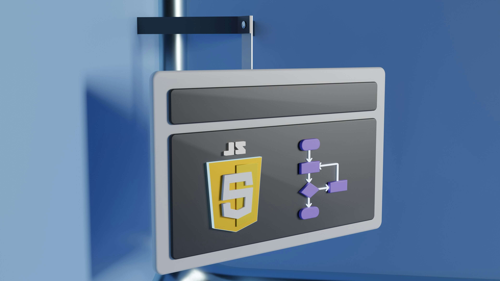

JavaScript'in Geleceği: ES2024 ve Daha Fazlası

JavaScript, web'in temelini oluşturmaya devam ediyor ve her yıl yeni özelliklerle daha güçlü hale geliyor. Son zamanlarda yayınlanan ES2024 (ECMAScript 2024) sürümü, geliştiricilerin hayatını kolaylaştıran ve kod kalitesini artıran yenilikler getiriyor. Bu güncelleme, dilin daha modern ve okunabilir olmasını sağlarken, performans odaklı yeniliklerle de dikkat çekiyor.
Öne Çıkan Özellikler
- Array.fromAsync: Artık asenkron yinelenebilirleri (async iterables) doğrudan diziye dönüştürmek mümkün. Bu, özellikle büyük veri akışlarını yönetirken kodun daha temiz ve anlaşılır olmasını sağlıyor.
- Promise.withResolvers: Bu özellik, Promise nesnelerini daha kolay yönetme imkanı sunuyor. Bir Promise'i dışarıdan kontrol etmenizi sağlayarak daha esnek asenkron kodlar yazmaya olanak tanıyor.
- Atomics.waitAsync: Çok iş parçacıklı (multi-threaded) uygulamalarda senkronizasyonu geliştiren bu özellik, performansı artırırken karmaşık kodları basitleştiriyor.
Ne Anlama Geliyor?
Bu güncellemeler, web geliştiricilerinin daha hızlı, daha güvenli ve daha modern uygulamalar geliştirmesine yardımcı oluyor. Geliştiriciler, bu yeni özellikler sayesinde daha az kodla daha fazla iş yapabilecek ve karmaşık problemleri daha etkili bir şekilde çözebilecekler. JavaScript'in bu evrimi, gelecekteki web teknolojilerinin de şekillenmesinde önemli bir rol oynayacak.